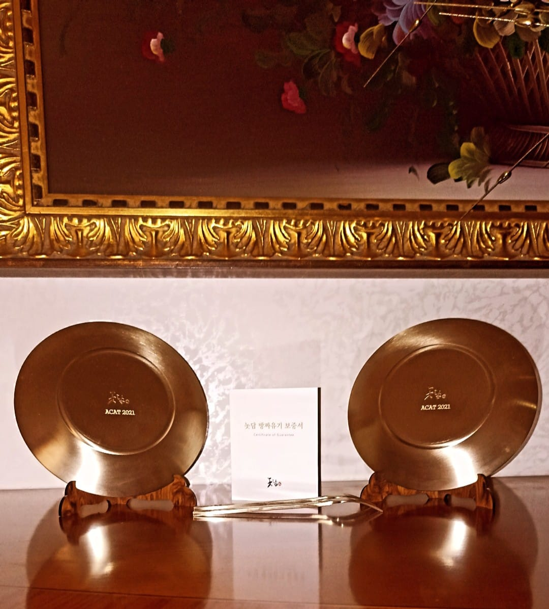

Education
- University of Bari, Apulia, Italy - M.Sc. in Nuclear Subnuclear and Astroparticle Physics
Thesis title: Search for double Higgs events produced via a vector boson fusion mechanism in the decay channel bb4l with the CMS experiment at the LHC
Supervisor: Prof. Nicola De Filippis
Grade: 110 with honors
GPA: 4.0 [Transcripts]
Courses: Mathematical Analysis, Geometry, Introduction to the Mechanics and Analysis, Physics Laboratory, Mechanics, Fluids and Thermodynamics, Programming languages, English, Analytical Mechanics, Mathematical Methods of Physics, Electromagnetic waves and Optics, Statistical Physics, Quantum Mechanics Applications, Chemistry, Matter Physics, Electronics Laboratory, Fundamental of the Physics History, Introduction to Nuclear and Subnuclear Physics, Introduction to Particle Detectors, Laboratory of Modern Physics
- University of Bari, Apulia, Italy - B.Sc. in Physics
Thesis title: Two-state quantum systems
Supervisor: Prof. Leonardo Angelini
Grade: 110 with honors
GPA: 4.0 [Transcripts]
Courses: Probabilistic Methods of Physics, Kinetic Theory of Transport Phenomena, Condensed Matter Physics, Electronics Laboratory, Elementary Particle Physics, Fundamental Interaction Phenomenology, High Performance Computing in Physics, Quantum Field Theory, Interacting Quantum Fields, Physics Applications of group Theory, Statistical Data Analysis Laboratory, High Energy Astrophysics, Public Speaking and Scientific WritingNuclei and Particles Detection Laboratory, Mathematical Methods of Physics

Other Educational Courses
-
2021


- Machine Learning, University of Stanford
- Particle Physics: an Introduction, University of Geneva
- Technical Writing, Moscow Institute of Physics and Technology
- Addressing Large Hadron Collider Challenges by Machine Learning, HSE University
- Programming Foundations with JavaScript, HTML and CSS, Duke University
- CERN Tutorials: Introduction to Overleaf
- QCD and Monte Carlo techniques, DESY
High Energy Physics Schools
-
2022
-
2020-2021
- Terascale Monte Carlo School: PB TMDs with CASCADE
- ESCAPE Summer School on Data Science for Astronomy, Astroparticle and Particle Physics
- 2nd Terascale School of Machine Learning
- SHINE Autumn School: Detectors and Data Processing
- SHINE Autumn School: Physics and Facility
- Terascale Summer School 2020,DESY
- PHYSTAT, Online Reduced Terascale Statistics School 2020


Skills
| Spoken Languages | Programming Languages | Scientific Tools | Markup Languages and Database |
|---|---|---|---|
| Italian (native) | C/C++ | ROOT/ROOTFit | MySQL |
| English (good) | Python | Tensor Flow | HTML/HTML5 |
| French (basic) | Bash | Scikit-learn | CSS |
| Spanish (basic) | Fortran | Git | JavaScript |
Teaching and Awards
It is no good to try to stop knowledge from going forward. Ignorance is never better than knowledge. -- Enrico Fermi
Teaching
-
2021
- Didactic tutor of Physics at University of Bari Department of Biosciences, Biopharmaceuticals and Biotechnology
Awards
- CMS Data Analysis School 3rd Prize (4 - 15 January 2022)
- University of Bari Ph.D. Fellowship and INFN Membership Association (October 2021 - Present) 
- Best Poster Awards ACAT 2021 (29 November 2021 - 3 December 2021)
- CSN1 INFN Fellowship (26 July 2021 - 3 November 2021)
- ECOMAP Scholarship (2016 - 2020)
- University of Bari Scholarship (2016 - 2020)


Photos
Person me = new Person();
while (me.isAlive()) {
me.WakeUp();
me.Smile();
me.EatPizza();
me.Code();
me.Sleep();
}


{kind=link}
{kind=link}
{kind=link}
© 2021 Brunella D'Anzi . Design: HTML5 UP.